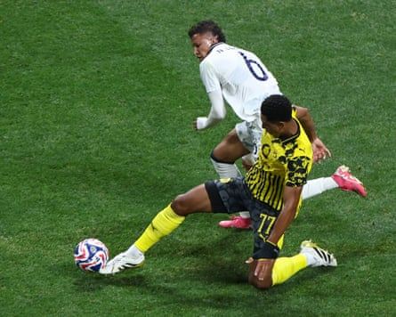
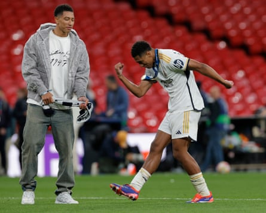

J obe Bellingham was furious when he found out that the early yellow card he had been shown for a tackle on Nelson Deossa against Monterrey meant missing the next game of the Club World Cup and he was still furious the following day.
The news hit hard when he heard it at half-time heading down the tunnel and the hurt was not going away in a hurry. This was not just the next game, it was Borussia Dortmund versus Real Madrid, the Bellingham brothers on the same pitch for the first time and the match so special Dortmund used it to convince him to move to Germany in the first place. That and a disguise.
On the morning after Sunderland won the Championship playoff final against Sheffield United at Wembley, Dortmund’s chief executive, Hans-Joachim Watzke , had pulled on a hat and shades and sneaked into the team’s London hotel. Dortmund had watched the scores come in from Wembley, concerned that defeat would mean Bellingham would be in no mood to talk to anyone. Watzke slipped past the fans, most of whom had celebrated much more than they had slept, and through the lobby. “We talked about the right path for him,” Watzke said.
Dortmund left more optimistic than they had come, but the transfer deal was not done. Both Milan clubs were interested; Real Sociedad too. Although Germany was seen as the ideal place for the 19-year-old, Eintracht Frankfurt and Leipzig were talking to him too.
Dortmund arrived in London fearing they would miss out, that the final destination was probably going to be Leipzig, while Bellingham still had a meeting with Frankfurt, before heading off on holiday with his brother. Everyone at Dortmund had known Jobe since he was little and the family knew the club, the relationship perfect, but that was no guarantee. It might have been the opposite.
Jobe Bellingham competes for the ball with Nelson Deossa.Photograph: Franck Fife/AFP/Getty Images
Dortmund’s scouting department were convinced about the younger Bellingham, but more cautious than they had been with his older brother Jude, precisely because of Jude. They were keen to avoid falling into the trap of allowing their judgment to be conditioned by the player they had sold to Real Madrid , determined to be absolutely certain this was purely about him, a player they see ending up among the very best in the Bundesliga.
Jobe, too, had been unsure: reluctant to follow his brother. The sporting director, Lars Ricken, asked Watzke to speak to him and he flew out – first to the north-east, then London – the day after the playoff final. “I told him that you have to take the right path for yourself, regardless of who has gone down it before,” Watzke said.
“There is a reason he wears Jobe on his shirt,” Sebastian Kehl, the sporting director, told Süddeutsche Zeitung . “Jobe is Jobe. That reflects his personality, that he wants to follow his own path. Everyone at Dortmund has worked on this signing and we’re very happy that it has ended well.”
Jude did play a part. Dortmund, where he would have Champions League football every season, was the best place for the brothers to end up playing for England together, Jobe was told. If that wasn’t imminent, this was: the Club World Cup quarter-final was lined up to be Real Madrid versus Dortmund, a date in the diary circled and shared. Maybe not the trump card, but genuinely a selling point, presented to Bellingham as another reason to come.
Jude Bellingham (right) celebrates victory at the 2024 Champions League final with his brother Jobe at Wembley.Photograph: Tom Jenkins/The Guardian
They had talked about it a lot, a moment becoming increasingly real. Madrid’s base is at the Four Seasons in Palm Beach; Dortmund are in the Four Seasons, Fort Lauderdale. The Bellingham brothers are 36 miles apart and have seen each other. The family have been in Florida.
They have never played each other, never played together. Now, with Juventus beaten and Dortmund kicking off against Monterrey that same evening, 2-0 up early, they would; a special moment, the game of their lives.
Then it happened. Bellingham’s sliding tackle on the right wing earned him a suspension, although he didn’t know yet. At the Club World Cup, cards aren’t wiped at the end of the group phase. Once he was aware, thoughts inevitably went back to his first yellow, against Ulsan HD, which only made it worse: that one was not even a foul.
The Dortmund striker Serhou Guirassy had not been aware either. When asked about the suspension he started talking about how he hoped he would be the best player on the pitch against Madrid and then there was a pause as someone said something, a laugh, and he said: “Oh … It’s a little bit of a pity for him, but I hope he will have another chance.”
A little? “We all saw that he was very disappointed,” Dortmund’s manager, Niko Kovac, said. “At half-time, he didn’t exactly know that the second yellow card is a suspension. He was a little bit surprised.
“OK, he’s young. His brother is also young, so I’m convinced they’ll face each other. Maybe next season in the Champions League and then the future. The future is theirs. The Club World Cup would have been nice, but it wasn’t to be.”